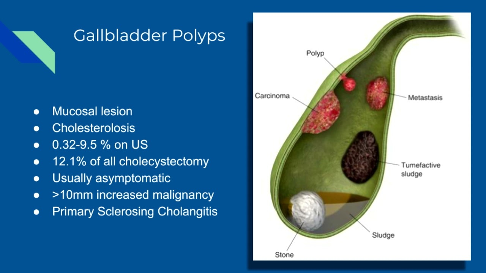

Gallbladder polyps

SYMPTOMS:
In many cases, people with gallbladder polyps show no symptoms. There are, however, some people who complain of:
- occasional pain in the right part of the upper abdomen (hypochondrium)
-
nausea
-
vomiting
CAUSES
- It isn’t clear what causes gallbladder polyps. Your gallbladder is a pear-sized organ located beneath your liver. It stores and concentrates bile from your liver.
-
Your body uses bile to break down and absorb fat. Your gallbladder releases it into the first section of your small intestine. Bile contains bile salts, cholesterol, fat, and bile pigments.There may be a connection between gallbladder polyps and the way your body breaks down fat. You may be more likely to get gallbladder polyps if your body doesn't break down fat well.
DIAGNOSIS:
If your doctor is worried you have gallbladder polyps, they may do a test to diagnose the polyp and its size. Possible tests include:
- abdominal ultrasound, which is noninvasive
endoscopic ultrasound, which is minimally invasive
TREATMENT
- Treating gallbladder polyps has to do with the size of the growth.
-
For polyps less than 1/2 inch in diameter, your doctor might schedule regular ultrasounds to monitor your growths for any changes that might indicate cancer. Your doctor may recommend abdominal or endoscopic ultrasounds.
-
For polyps larger than 1/2 inch in diameter, your doctor might recommend surgical removal of the gallbladder. This procedure is called a cholecystectomy. Many doctors recommend this course of treatment if you have both gallstones and gallbladder polyps